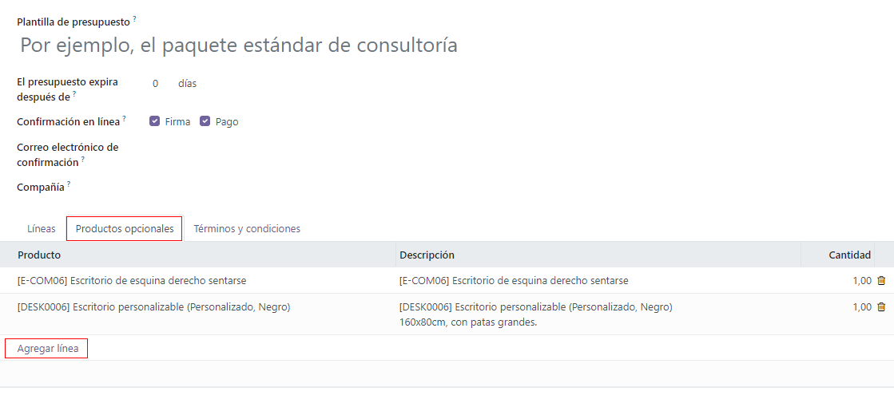
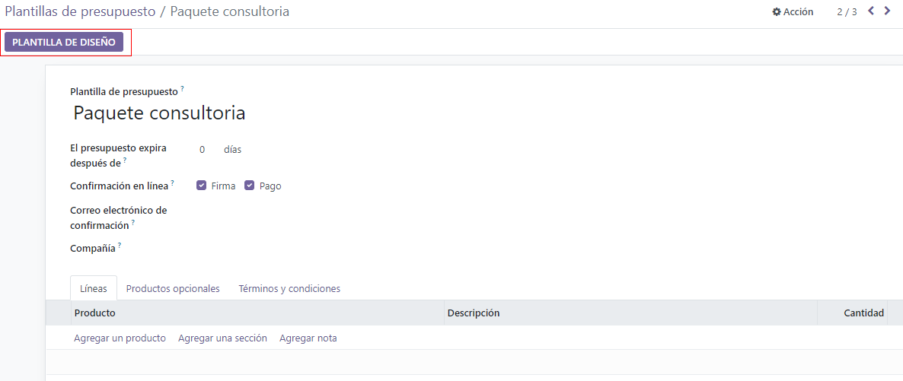

Quotation templates¶
In Odoo Sales, salespeople have the ability to create reusable quotation templates for common products or services that the business offers.
By using these templates, quotations can be tailored and sent to customers at a much faster pace, without having to create new quotations from scratch every time a sales negotiation occurs.
Configuration¶
Begin by activating the setting in , and scroll to the Quotations & Orders heading.
In that section, check the box beside the Quotation Templates option. Doing so reveals a new Default Template field, in which a default quotation template can be chosen from a drop-down menu.

Also, upon activating the Quotation Template feature, an internal ➡️ Quotation Templates link appears beneath the Default Template field.
Clicking that link reveals the Quotation Templates page, from which templates can be created, viewed, and edited.
Before leaving the Settings page, don’t forget to click the Save button to save all changes made during the session.
Create quotation templates¶
Click the Quotation Templates link on the Settings page, or navigate to . Both options reveal the Quotation Templates page, where quotation templates can be created, viewed, and edited.

To create a new quotation template, click the New button, located in the upper-left corner. Doing so reveals a blank quotation template form that can be customized in a number of ways.

Start by entering a name for the template in the Quotation Template field.
Then, in the Quotation expires after field, designate how many days the quotation
template will remain valid for, or leave the field on the default 0 to keep the template valid
indefinitely.
If the Online Signature and/or Online Payment features are activated in the Settings (), those options are available in the Online confirmation field.
In the Online confirmation field, check the box beside Signature to request an online signature from the customer to confirm an order. Check the box beside Payment to request an online payment from the customer to confirm an order.
Both options can be enabled simultaneously, in which case the customer must provide both a signature and a payment to confirm an order.
Next, in the Confirmation Mail field, click the blank field to reveal a drop-down menu. From the drop-down menu, select a pre-configured email template to be sent to customers upon confirmation of an order.
Tip
To create a new email template directly from the Confirmation Mail field, start typing the name of the new email template in the field, and select either: Create or Create and edit… from the drop-down menu that appears.
Selecting Create creates the email template, which can be edited later. Selecting Create and edit… creates the email template, and a Create Confirmation Mail pop-up window appears, in which the email template can be customized and configured right away.
When all modifications are complete, click Save & Close to save the email template and return to the quotation form.
If working in a multi-company environment, use the Company field to designate to which company this quotation template applies.
In the Recurrence field, choose from a variety of pre-configured amounts of time (e.g. Monthly, Quarterly) to designate how often this quotation template should occur.
Note
The Recurrence field only applies to subscription plans. For more information, check out the documentation on Subscription plans.
Lines tab¶
In the Lines tab, products can be added to the quotation template by clicking Add a product, organized by clicking Add a section (and dragging/dropping section headers), and further explained with discretionary information (such as warranty details, terms, etc.) by clicking Add a note.

To add a product to a quotation template, click Add a product in the Lines tab of a quotation template form. Doing so reveals a blank field in the Product column.
When clicked, a drop-down menu with existing products in the database appear. Select the desired product from the drop-down menu to add it to the quotation template.
Tip
If the desired product isn’t readily visible, type the name of the desired product in the Product field, and the option appears in the drop-down menu. Products can also be found by clicking Search More… from the drop-down menu.
Note
When a product is added to a quotation template, the default Quantity is 1, but
that can be edited at any time.
Then, drag-and-drop the product to the desired position, via the six squares icon, located to the left of each line item.
To add a section, which serves as a header to organize the lines of a sales order, click Add a section in the Lines tab. When clicked, a blank field appears, in which the desired name of the section can be typed. When the name has been entered, click away to secure the section name.
Then, drag-and-drop the section name to the desired position, via the six squares icon, located to the left of each line item.
To add a note, which would appear as a piece of text for the customer on the quotation, click Add a note in the Lines tab. When clicked, a blank field appears, in which the desired note can be typed. When the note has been entered, click away to secure the note.
Then, drag-and-drop the note to the desired position, via the six squares icon.
To delete any line item from the Lines tab (product, section, and/or note), click the üóëÔ∏è (trash can) icon on the far-right side of the line.
Optional Products tab¶
The use of optional products is a marketing strategy that involves the cross-selling of products along with a core product. The aim is to offer useful and related products to customers, which may result in an increased sale.
For instance, if a customer wants to buy a car, they have the choice to order massaging seats, as well, or ignore the offer and simply buy the car. Presenting the choice to purchase optional products enhances the customer experience.
Optional products appear as a section on the bottom of sales orders and eCommerce pages. Customers can immediately add them to their online sales orders themselves, if desired.
In the Optional Products tab, Add a line for each cross-selling product related to the original items in the Lines tab, if applicable. The products added here ideally complement the original offering as added value for the prospective buyer.
Clicking Add a line reveals a blank field in the Product column.
When clicked, a drop-down menu with products from the database appear. Select the desired product from the drop-down menu to add it as an optional product to the quotation template.
To delete any line item from the Optional Products tab, click the üóëÔ∏è (trash can) icon.
Note
Optional products are not required to create a quotation template.
Terms & Conditions tab¶
The Terms & Conditions tab provides the opportunity to add terms and conditions to the quotation template. To add terms and conditions, simply type (or copy/paste) the desired terms and conditions in this tab.

Note
Terms and conditions are not required to create a quotation template.
Design quotation templates¶
In the upper-left corner of the quotation template form, there’s a Design Template button.
When clicked, Odoo reveals a preview of the quotation template, through the Odoo Website application, as it will appear on the front-end of the website to the customer.
Note
This feature is only available if the Website application is installed.
Odoo uses numerous blue placeholder blocks to signify where certain elements appear, and what they contain (e.g. Template Header, Product).
To edit the content, appearance, and overall design of the quotation template via the Website application, click the Edit button in the upper-right corner.
When Edit is clicked, Odoo reveals a sidebar filled with a variety of design elements and feature-rich building blocks. These building blocks can be dragged-and-dropped anywhere on the quotation template design.

After a block has been dropped in the desired position, it can be customized and configured to fit any unique need, look, or style.
Tip
Quotation template design uses the same methodology and functionality with design building blocks as a typical web page design with Odoo Website. Be sure to check out the Website documentation to learn more.
When all blocks and customizations are complete, click the Save button to put those configurations into place.
There is also a blue banner at the top of the quotation template design with a link to quickly return Back to edit mode. When clicked, Odoo returns to the quotation template form in the back-end of the Sales application.
Use quotation templates¶
When creating a quotation (), choose a pre-configured template in the Quotation Template field.
To view what the customer will see, click the Preview button at the top of the page to see how the quotation template appears on the front-end of the website through Odoo’s customer portal.